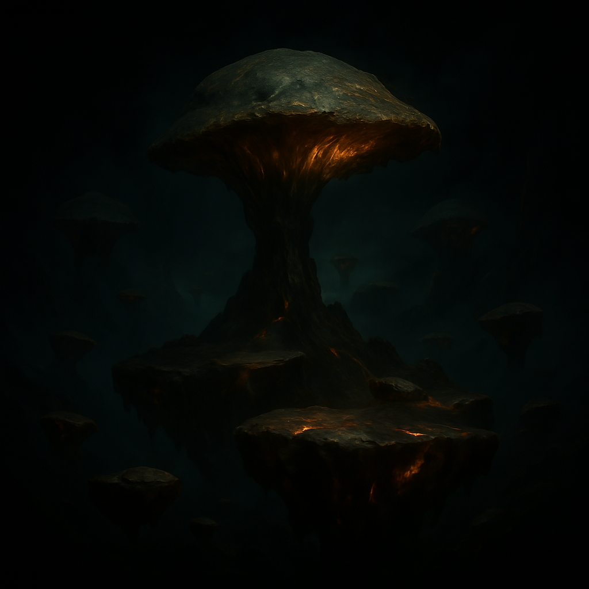

Espacio Xen: abrir la mente
Este espacio reúne fragmentos, notas y recortes que no siguen un hilo conductor fijo. Varías observaciones describen Xen como un lugar con vibraciones propias, mientras otros lo ven como el eco de experimentos fallidos.
Se han incorporado testimonios, datos visuales y referencias a eventos puntuales del juego. La intención es dejar abierta la interpretación, para que cada lector pueda aportar su propio análisis sin que nada quede completamente resuelto.
Poco a poco, estos apuntes dispersos podrían conformar una narrativa más amplia o, al menos, ayudar a cuestionar las versiones oficiales y las interpretaciones comunes.
